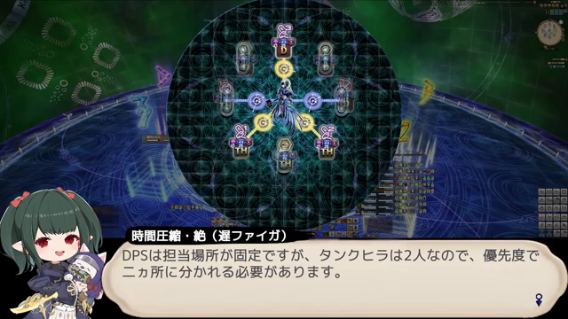
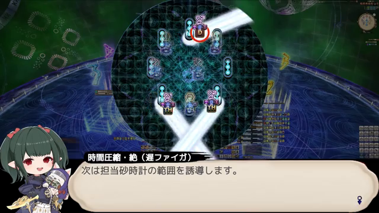
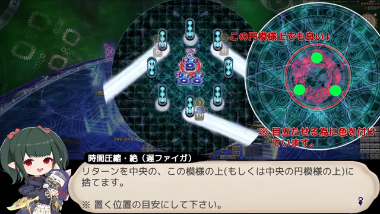
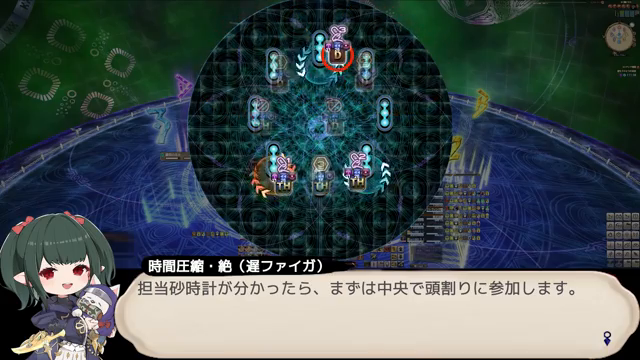
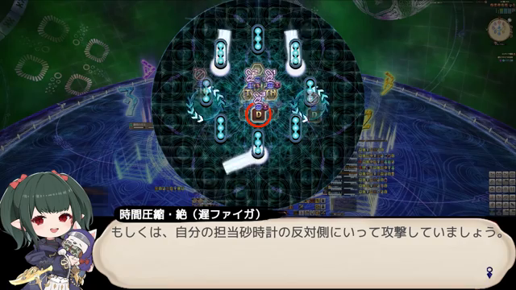

P3 タイムライン
MTナイト / 暗夜誘導確認用
| 時刻 | 技 | MTナイトの仕事 | 軽減/操作 | 注意 |
|---|---|---|---|---|
| 00:00 | ジャンクション実行T | 闇の巫女フェーズ開始。ヘイトとAAを確認 | 移行 | このフェーズは魔法AAが多い。 |
| 00:05 | 開幕LB3I | LB役なら早めに詠唱開始。MTは視認性を邪魔しない位置と向きを維持 | 要確認 | 固定方針。アポカリ崩れ後はヒラLBで戻しにくいため、P3開幕で使う案。 |
| 00:18 | ヘル・ジャッジメント | HP1になる。ヒラ戻しを邪魔しない位置取り | 戻し | 直後の時間圧縮・絶へ軽減を合わせる。 |
| 00:33 | 時間圧縮・絶メモINT見 | 担当ならパッセ/リプ。自分のデバフを発動順に確認 | 軽減 | 中ファイガ対象へインタベを投げるとヒラが楽。時計誘導と視線を最優先。 |
|
跡部王国改/ぽにこね式
水かエラプかの再判断を減らすための補助。X/ロドストのマクロ本文を事前に自分用へ入れておく。 見る順と軽減
よくあるミスは時計誘導忘れ、時計ビーム、エラプ/ブリザガ、リターン設置、最後の視線。ここでリプを入れない側はシェルクラッシャーへ即リプ。 |
||||
| 01:21 | シェルクラッシャーT | 時間圧縮にリプを入れていない側が即リプ | リプ | バースト中でも次のブラックヘイローに備えてAAを確認。 |
| 01:37 | ブラックヘイローT | 暗夜を無敵受けするならここでフルバフ候補 | 強攻撃 | フルバフなら1人受け可。STは無理に入らなくてよい。 |
| 01:46 | ディレイスペル・リフレイン | 暗夜誘導に向けてエラプションのズレを読む | 準備 | 外周2人を結んだ底辺から、横にずれたエラプションのラインが誘導先。 |
| 02:02 | アポカリプス安置基準IN見 | うちの方針は安置基準。派生元ではなく、安置になった場所を基準にTH/DPSを分ける | 安置基 | アポ基募集と混同しない。安置2か所と回転方向を先に見る。 |
|
安置基準
安置基準は移動距離が少ない。募集文が「アポ基」の時だけ基準が変わるので、今は見ない。 エラプション注意
隣とエラプが重なる事故は、初期位置と中央へ入る角度が原因になりやすい。暗夜後はボスを見てTH組左、DPS組右。 |
||||
| 02:27 | 暗夜の舞踏技誘導T | MTナイトの山場。誘導後、2連をどちらで受けるか意識 | インビン候補 | ナイトはP4宵闇よりここでインビン推奨。リプはかなりシビア。 |
|
誘導先の見つけ方
中央集合が甘いと走り出しがシビア。先に誘導先を決めてから動く。 受け方
ブラックヘイローをフルバフ、暗夜をインビンにするのがナイトMT向けの基本候補。 |
||||
| 02:39 | ショックウェーブ・パルサー見 | P4移行へ向けて軽減確認 | 全体 | 合算09:56でP4へ。 |
| 02:52 | エンド・オブ・メモリーズ | 可能ならボスを北寄せ。P4開幕の位置を南スタート寄りにする | 北寄せ | 東西なら北へ引く。ナイトはホリスピを抱えていて誘導しやすい。 |
時間圧縮・絶 画像カンペ
サブモニター用 / まず遅ファイガ
遅ファイガ 順番で見る
MTナイト視点では遅ファイガが一番多い。TH4人の2パターン合計で、遅4枠 / 中2枠 / 早1枠 / ブリザガ1枠。

1. 担当を決めるTHは2人なので優先度で2か所へ分かれる。DPSは担当位置固定。

2. 頭割り後に砂時計誘導中央頭割りに入ったあと、自分の担当砂時計の範囲を誘導する。

3. 中央へ戻ってリターン設置2回目頭割り後、中央の模様を目安にリターンを置く。

4. ファイガを外周へ捨てる担当砂時計側の外周へ出てファイガを捨てる。捨てたら中央へ戻る。

5. リターン後は視線を見ないシャドウアイを見ない向きで戻される。余裕があれば反対側で殴る。
出典: ぬけまる時間圧縮・絶解説 遅ファイガ 13:32。公開ページでは遅ファイガの確認に必要な範囲だけ掲載。